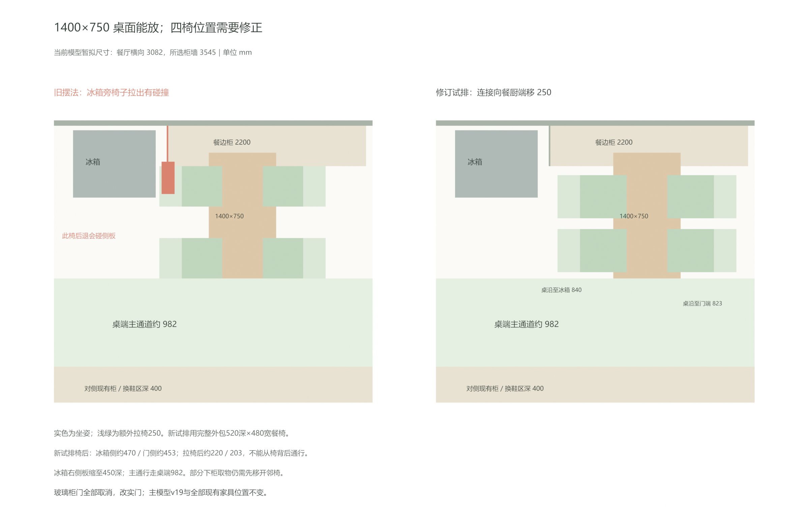

独立修订05 · 2026-11-05 · 未融合主模型
桌面放得下，原来的四椅位置需要修正
保留1400×750×高750桌面。当前模型餐厅横向3082，所选柜墙3545；均未以现场实测确认。本轮不是单凭效果图判断尺寸。

原04的冰箱侧近墙椅背到700深封板仅150，向后拉250时会相撞。前轮只检查桌端和餐厨端，没有把这一侧充分核对。
修订仅在独立提案内：L连接点和餐面向餐厨端移250，冰箱右侧封板退到450柜深内；四把椅子仍两侧各二，改按完整外包520深×480宽试算，前150进入桌下，额外后退250。
| 项目 | 修订试排 | 含义 |
|---|---|---|
| 桌端到对侧柜 | 982 | 主要绕行通道，端头不设第五把椅子 |
| 冰箱侧桌沿到机身 | 840 | 从桌沿量，不是椅背后的净通道 |
| 餐厨侧桌沿到边界 | 约823 | 从桌沿量；门实际净开口和使用仍需核对 |
| 坐姿椅背后 | 冰箱侧470／餐厨侧约453 | 不作为主要通行路线 |
| 额外拉椅250后 | 冰箱侧220／餐厨侧约203 | 不支持人从拉出椅子背后通行 |
结论是紧凑可用，不是四周都宽敞。部分下柜及三横抽取物需先移动邻椅；冰箱型号、机门和内部抽屉行程、具体椅型及人的进出动作尚未验证。若希望四人就座时所有柜门随开、所有方向都能绕行，这个固定L形方案不合适。
玻璃柜门取消
业主最新决定适用于A、B、C三套候选：餐边柜右侧改实门封闭收纳，外观随各方案采用暖白、浅木或灰苔绿；本次公共关系草模使用暖白。内部用活动层板，不保留透光展示门。四段式、深木中段、三横抽和免拉手保留。
灯光保留操作壁龛照明、餐吊灯。封闭柜内若配灯，只作为开门感应取物照明，关门时不透光。本次不涉及餐厨玻璃推拉门或阳台玻璃。
尺度参考与文件
用桌沿至障碍物800及每人约600用餐宽度作为设计参考，与本方案600座位中心间距比较；是家具规划建议，不作为中国住宅强制标准。来源：IKEA餐厅规划指南。
01–04旧图保留为过程记录，不是最新无玻璃门方案。本轮未生成新的AI实景图；尺寸图直接按模型坐标绘制。v19、28件家具、VR均保持，v20未启动。三套外观没有替业主选择。